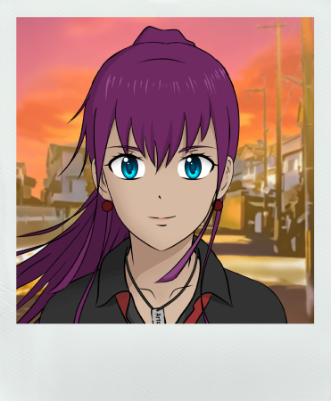
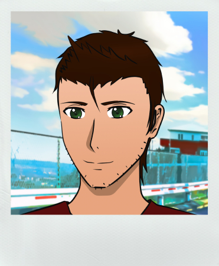
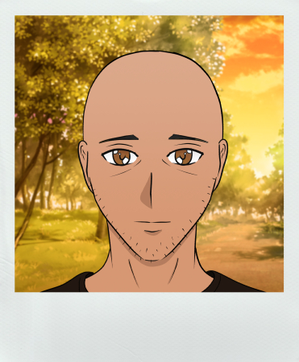
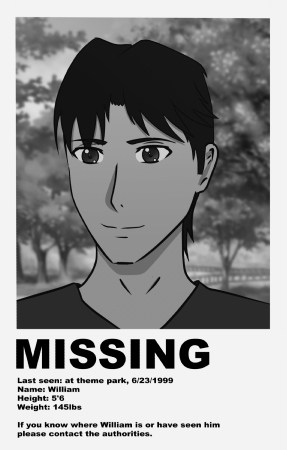
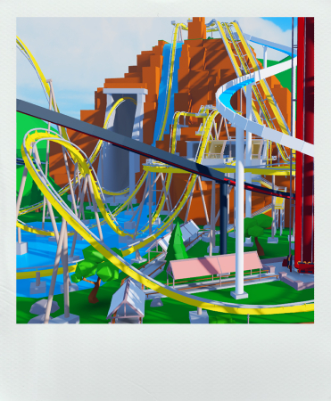
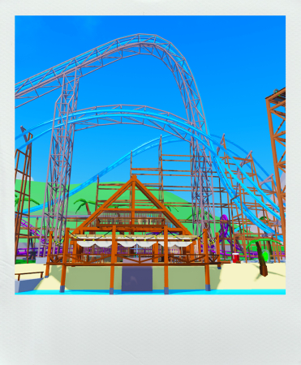
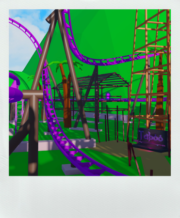
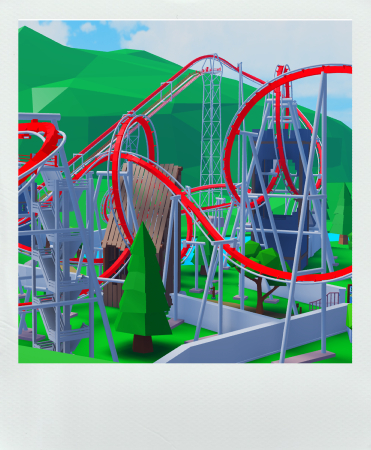
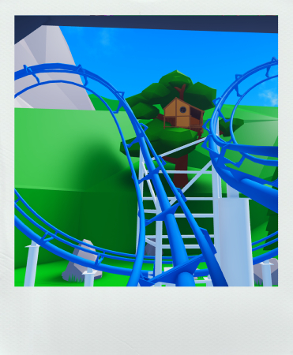
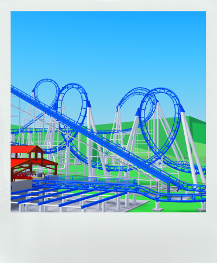

Synopsis
Summer break in 2009, you find yourself standing alone on what appears to be a deserted road, waiting for the bus. Your destination? A peculiar theme park situated high in the mountains. This park is known to be the best in the world, but it strikes you as odd that no one seems to remember how or when it came to be. It's as if it has always existed.
Rumors about a vanished ride, two missing people, and strange unexplainable sightings have haunted this amusement park's history for the past decade. Despite these persistent rumors, no one seems to believe in them.
However, you have a different plan in mind. You intend to investigate these mysteries and uncover the truth behind them.
Main Characters
Kana
She's a temp-hire working at The Theme Park, known for her quick-wit, intelligence, and love for coffee. As a roller coaster engineer, she's considered to be very good her job.
However, there seems to be something more that she's searching for at the park.
Perhaps it's the excitement of uncovering something new and unexpected, or maybe she's on a personal mission to discover a hidden truth.

Tim
Tim is the laid-back manager of the ride management team at the park. Known for his easy-going nature and approachable demeanor, he always puts his employees first.
He can often be found in the meeting room, handling paperwork and ensuring everything runs smoothly. He possesses a wealth of knowledge about the park's history and inner workings, but he doesn't always let on about what he knows.

Paul
Paul is a tired-looking park-goer who was once known for telling tall tales. Though his stories were often dismissed as mere fabrications, rumors persist that he carries a dark secret.
These days, Paul spends his time quietly at the local cafe. His once-energetic demeanor has been replaced by a sense of weariness, and he often seems lost in thought.

William
William was a ride operator who went missing from the park 10 years ago. Despite an extensive investigation, he was never found.
The circumstances surrounding William's disappearance remain a mystery. Some say that he simply wandered off and got lost in the dense forest that surrounds the park, while others believe that it was something more sinister.

© 2024 Jacob Miller. All Rights Reserved.
Roller Coasters
Theme Park Project boasts a number of exhilarating virtual roller coasters that are sure to leave players on the edge of their seats. As they ride these coasters, players can accumulate a ridescore, which keeps track of the number of rides they've taken. The higher the ridescore, the greater the rewards, including in-game prizes, and the opportunity to compete for a top spot on the leaderboard.
Cliff Diver
Perched atop a towering canyon, Cliff Diver reigns as the park's tallest roller coaster, boasting a vertigo-inducing steep drop. Riders will experience an adrenaline-fueled rush as they hurtle down the coaster's first drop, descending a waterfall and into two consecutive inversions.

Hurricane
Hurricane is an exceedingly rare prototype coaster that provides a smooth and safe ride. What sets Hurricane apart from other coasters is its intensity. The sudden transitions and quick pacing create an adrenaline-fueled ride that will leave even the most experienced coaster enthusiasts breathless.

Taboo
Taboo is a launch roller coaster that surrounds the resort's parking lot and spans the Central Area and Beachside District. The coaster launches riders up and over the resort building before plummeting them down into the jungle below, providing a thrilling ride experience with stunning views.

Wyvern
Wyvern is an inverted coaster that takes riders on a thrilling journey through a castle on the outskirts of the park. The coaster is well-known for its nine inversions, which provide a heart-pumping ride experience.
Rumor has it that the coaster was built exceedingly fast due to the sudden disappearance of another ride. Despite the mysterious circumstances surrounding its construction.

End Bringer
The oldest standing ride at the park. End Bringer spans almost the entire length of the park. The coaster
takes riders from the Central Square to the Beachside District where riders are taken high above the sea below.
Featuring 6 inversions End bringer is known for it's iconic interlocking loops and winding corkscrews. Over the years the roller coaster has
become a fan favorite among coaster enthusiasts and casual park-goers alike.

Unlockable Rides
Some of the most exciting roller coasters aren't accessible right from the start. As players progress through the story and increase their ride score, they'll unlock new areas and gain access to even more exciting coasters.

© 2024 Jacob Miller. All Rights Reserved.